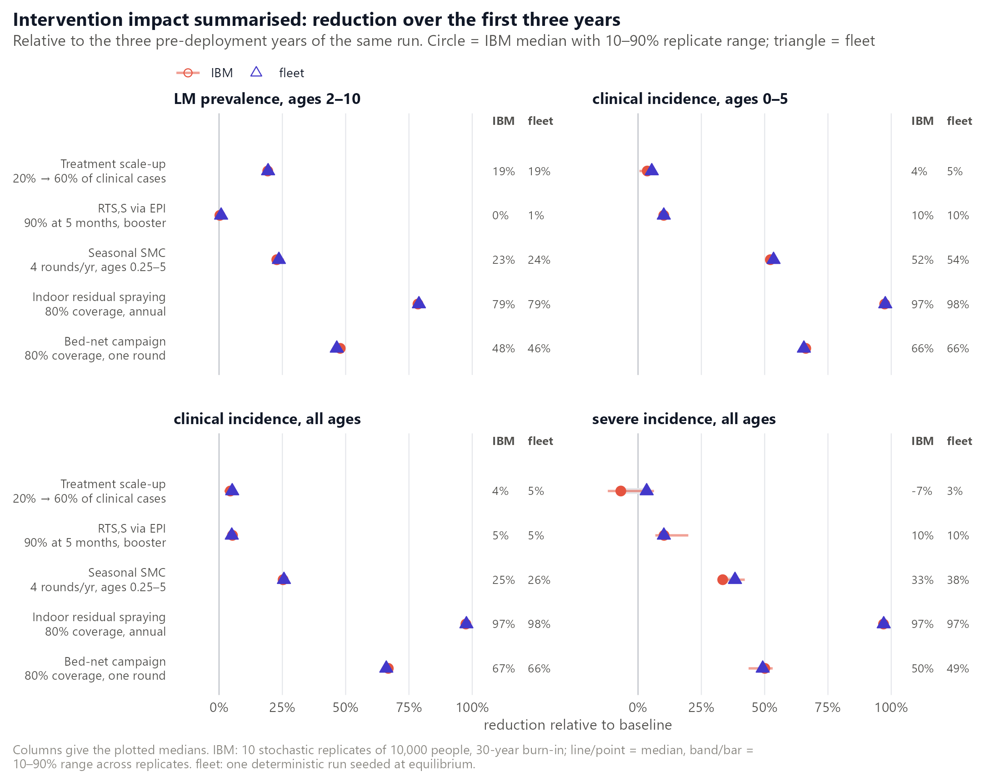

blink is meant to be a drop-in mean-field twin
of the malariasimulation
individual-based model (IBM): hand both models the same parameter list
and they should tell the same epidemiological story, with
blink finishing in seconds and without Monte-Carlo noise.
This article puts that claim to the test. Every panel below runs the
identical malariasimulation parameter list
through both models – first the core equilibrium relationships, then a
battery of interventions – and draws them side by side.
How to read the figures. The IBM is stochastic, so
it is never shown as a single run: each IBM curve is the median
of ten replicates, with a shaded band (or a bar) spanning the
10th to 90th percentile across those replicates. blink is
deterministic and is drawn as one line. Throughout, the two models are
distinguished three ways at once – colour (coral IBM, indigo blink),
line type (dashed IBM, solid blink) and point shape (circle IBM,
triangle blink) – so every panel still reads in greyscale and under
colour-vision deficiency.
Set-up
Both models receive the output of
malariasimulation::get_parameters() with a population of
10,000, followed by set_equilibrium(init_EIR = ...) and,
for the intervention scenarios, the ordinary set_*()
builders. Nothing is tuned for either model.
| malariasimulation (IBM) | blink (ODE) | |
|---|---|---|
| Runs per scenario | 10 stochastic replicates, seeds 1000 + 7k
|
1 (deterministic) |
| Population | 10,000 people | population-free (per-capita densities) |
| Initial state |
malariaEquilibrium seed, then a 30-year
burn-in so each replicate reaches its own stochastic steady
state |
malariaEquilibrium seed; integrated over the same
30-year horizon |
| Observation window | final 3 years (equilibrium quantities); monthly and weekly bins for time series | identical |
| Interventions | deployed at year 30, followed for 6 years | identical |
| Output age bands |
*_rendering_min/max_ages set once on the shared
parameter list |
identical columns |
| Numerics | daily time step | adaptive solver, atol = 1e-8, rtol = 1e-6,
step_size_max = 10 days |
The intervention scenarios, each layered on the EIR 20 baseline unless stated:
| Scenario | Deployment | Builder calls |
|---|---|---|
| Treatment scale-up | coverage of clinical cases 20% -> 60% at year 30 (AL) |
set_drugs(list(AL_params)),
set_clinical_treatment(coverages = c(0.2, 0.6))
|
| RTS,S via EPI | 90% of infants at 5 months from year 30; one booster 12 months later at 80% | set_pev_epi(rtss_profile, booster_profile = list(rtss_booster_profile)) |
| Seasonal SMC | EIR 15 in a seasonal setting; 45% treatment with SP-AQ; 4 monthly rounds per year for 3 years, 90% coverage, ages 3 months to 5 years |
set_drugs(list(SP_AQ_params)),
set_clinical_treatment(0.45), set_smc()
|
| Indoor residual spraying | 80% coverage, three annual rounds from year 30 (Actellic-like decay parameters) | set_spraying() |
| Bed-net campaign | one round at 80% coverage in year 30, 5-year mean retention, standard pyrethroid net parameters | set_bednets() |
The seasonal setting uses a single-peaked Fourier rainfall profile
(g0 = 0.285, g = c(-0.33, -0.13, 0.052),
h = c(-0.35, 0.020, 0.10)) with
model_seasonality = TRUE.
Core relationships
Transmission intensity
The first test is the backbone of any malaria model: how prevalence and clinical incidence scale with the entomological inoculation rate.

Across the 120-fold range the two curves lie on top of each other.
The largest gap in PfPR2–10 between blink and the IBM median
is 0.004 (0.237 against 0.240 at EIR 3), and blink sits inside the IBM’s
10–90% replicate band at every EIR. Under-5 clinical incidence runs
0.7–2.6% above the IBM median: inside the replicate band at five of the
six EIRs, and 0.1% above its upper edge at EIR 120, where ten replicates
pin the IBM to within about ±1%. Both models also realise the EIR they
were asked for – the IBM’s rendered bites per person per year and
blink’s reported EIR are within about 1% of the target
throughout – so the x-axis is a fair one.
| EIR | IBM PfPR2–10, median (10–90%) | blink PfPR2–10 | IBM clinical, ages 0–5, per child-year | blink clinical | realised EIR, IBM / blink |
|---|---|---|---|---|---|
| 1 | 0.115 (0.107–0.118) | 0.114 | 0.16 (0.15–0.17) | 0.16 | 1.0 / 1.0 |
| 3 | 0.240 (0.231–0.245) | 0.237 | 0.42 (0.39–0.44) | 0.42 | 3.0 / 3.0 |
| 10 | 0.427 (0.418–0.435) | 0.428 | 1.02 (1.00–1.05) | 1.05 | 9.9 / 10.0 |
| 20 | 0.548 (0.544–0.552) | 0.548 | 1.52 (1.48–1.55) | 1.55 | 20.1 / 20.0 |
| 50 | 0.684 (0.678–0.694) | 0.686 | 2.27 (2.23–2.33) | 2.31 | 50.0 / 50.1 |
| 120 | 0.786 (0.781–0.791) | 0.786 | 2.84 (2.81–2.86) | 2.86 | 121.3 / 120.4 |
Age structure
At the reference EIR of 20 the models are compared across twelve age bands, finer in childhood where the profiles turn over quickly.

Prevalence by age agrees to within 0.005 in every band. Clinical incidence in the bands under 20 years – where the rates are large enough for a relative comparison to mean anything – is within −4.9% (15–20 years) to +2.6% (2–3 years) of the IBM median; above 20, blink runs 7–16% higher in relative terms, but the rates there are small and the absolute gap is at most 0.02 episodes per person-year (0.145 against 0.125 in 40–60 year olds), the tail of the same slight excess seen against EIR. Severe incidence is where the two models are least alike. In the under-5 bands, which carry most severe episodes, blink is within −11% to +7% of the IBM (52.7 against 53.9 per 1,000 person-years in infants; 61.0 against 57.2 at 1–2 years). Between 5 and 20 years blink’s severe incidence falls off faster with age than the IBM’s – 15–25% lower in relative terms, though these are bands with a handful of events per replicate (5.9 against 7.2 per 1,000 at 5–7 years; 0.48 against 0.64 at 15–20). blink lies inside the IBM’s 10–90% band in 11 of the 12 bands, the exception being 5–7 years.
Demography
The default runs use malariasimulation’s constant-hazard demography.
With set_demography() the IBM instead kills people by
age-specific death rates and its age pyramid emerges from that schedule;
blink derives the equilibrium age structure analytically
from the same rates. The scenario below uses a deliberately harsh
schedule – 4.8% per year in infancy, under 1% through the working ages,
and 12% per year over 80 – at EIR 20.

The two panels tell different stories, and each needs a caveat.
Left – the age pyramid. The IBM’s structure is not yet stationary: it starts from the default exponential age distribution and, after 30 years, only people under 30 have lived their whole lives under the custom schedule. Even so it sits close to the analytic stable structure the death rates imply (13.1% of the 0–85 population aged 60–85, against the IBM’s 12.4%). blink’s equilibrium structure matches it band for band through childhood and adolescence (under-5 share 8.8% in both) and runs one to two points heavier in the oldest bands (14.5% aged 60–85). That residual is the price of the coarse 5-year age groups above 15: exponential dwell times within a group let some people linger past the age at which the schedule would have removed them, and the whole open-ended 80+ group is counted in the 60–85 band.
Right – age-prevalence. The two curves agree to
within 0.008 at every age. That agreement hides a convention worth
knowing about. malariasimulation’s set_equilibrium() sizes
the mosquito population from the equilibrium under its default
exponential age structure, and run under the custom mortality – with far
fewer highly infectious young children – the IBM drifts to a new steady
state with an annual EIR of 13.8 rather than 20 and a
PfPR2–10 of 0.49 rather than 0.55. blink reproduces the IBM’s
mosquito density exactly and seeds at the EIR its own equilibrium under
the custom age structure then supports (13.9), so the same parameter
list realises the same transmission in both models. An earlier version
of blink held init_EIR = 20 exactly instead and sat
0.06–0.08 above the IBM through childhood here; that behaviour is still
available via parameters$hold_init_EIR = TRUE.
Seasonality
Seasonal forcing enters both models the same way – rainfall scales
the larval carrying capacity – but the two then propagate it through
very different machinery: individual mosquitoes and people with sampled
delays in the IBM, Erlang lag chains and a fixed-delay extrinsic
incubation period in blink.

The settled cycles coincide. Peak prevalence is 0.670 in the IBM and 0.668 in blink, in the same week of the year; the trough is 0.315 in both, one weekly bin apart. Under-5 clinical incidence peaks at 4.53 (IBM) against 4.50 (blink) episodes per child-year, again one bin apart, and the annual mean is 1.50 against 1.54 (+2.7%). Both models realise an annual-mean EIR of 18.7 against the aseasonal target of 20 – the same nonlinear-averaging shortfall in each – and an annual-mean PfPR2–10 of 0.492 (IBM; 10–90% range 0.484–0.499) against 0.490. The transient onto the cycle is shared too: seeded at the aseasonal equilibrium, both models’ annual-mean prevalence drops from 0.50 to 0.48 in the first year and settles within a few years.
Country site files
The equilibrium scenarios are clean but artificial. The harder test
is the real-world parameter lists that the malariaverse produces for
every administrative-1 x urban/rural sub-site of every malaria-endemic
country – each with its own seasonality, demography, treatment history
and years of vector-control and chemoprevention deployment.
blink was run from the same
site::site_parameters() lists that feed the IBM’s own
calibration diagnostic runs, and the two were compared
monthly (annual means would hide the seasonal cycle,
which is where a mean-field model is most likely to slip).

Across 450,684 sub-site-months in 1,391 sub-sites of 63 countries,
monthly clinical incidence correlates at r = 0.98 with a regression
slope of 1.00, and monthly severe incidence at r = 0.96 with a slope of
0.95: the two models agree on how incidence scales with transmission and
responds to the intervention histories. There is, however, a systematic
offset. blink sits 8.7% above the IBM on average for
clinical incidence and 8.8% for severe. With the slope at unity that
excess is an intercept – a small absolute addition, a few hundredths of
an episode per person-year – which matters most in low-incidence
sub-sites and dry-season months and hardly at all where incidence is
high. Every site file uses set_demography(), so the
mosquito-sizing convention described under Demography was an
obvious suspect; adopting the IBM’s convention (together with the
prophylaxis chains) moved the clinical excess from +10.1% to +8.7% and
the slope from 1.02 to 1.00, so it accounts for a small part of the
offset and the rest is not yet explained. The country files exercise
every intervention builder at once (treatment histories, net
distributions, IRS, SMC, PMC, RTS,S) on real seasonality and demography,
so this is the most demanding comparison on the page.
Intervention impact
Intervention effects are where the mean-field approximation has to
earn its keep: vector control acts on individuals who are (or are not)
protected across all their bites, chemoprevention is a discrete event,
and vaccination protects a cohort that ages. Each scenario below is
layered on the same baseline with the ordinary set_*()
builders and followed from three years before to six years after
deployment.

Row by row. Treatment scale-up moves prevalence in 2–10 year olds from 0.55 to 0.39 in both models while leaving under-5 clinical incidence almost untouched (a 4–5% reduction in both): more infections are cleared, but the lower exposure erodes clinical immunity, and the two effects nearly cancel. RTS,S via EPI acts on one birth cohort at a time, so under-5 incidence drifts down gradually as vaccinated children accumulate – from 1.55 to about 1.2 episodes per child-year by year six – and 2–10 prevalence barely moves; blink tracks the IBM median through the ramp and ends marginally higher (1.27 against 1.20). Seasonal SMC: at each round both models drop sharply and climb back together between the monthly rounds – blink’s post-deployment under-5 incidence sits within 1% of the IBM median on average, with a slightly sharper rebound after the season’s last round. IRS with three annual rounds drives prevalence to ~0.01 by year three in both models; when the third round’s protection wanes both rebound together and overshoot the pre-intervention incidence (2.39 episodes per child-year at +4.5 years in both, against a baseline of 1.55) because clinical immunity has drained during the suppression. Bed nets – one round, five-year mean retention – take prevalence to 0.17–0.18 by year one and under-5 incidence to 0.08 in both models, then recover along the same curve as the nets age; by year six blink is fractionally above the IBM (prevalence 0.538 against 0.529).

| Scenario | IBM PfPR2–10 reduction, median (10–90%) | blink | IBM under-5 clinical reduction, median (10–90%) | blink |
|---|---|---|---|---|
| Treatment scale-up | 19% (18–20%) | 19% | 4% (1–6%) | 5% |
| RTS,S via EPI | 0% (−1–2%) | 1% | 10% (9–12%) | 10% |
| Seasonal SMC | 23% (22–26%) | 24% | 52% (51–54%) | 54% |
| Indoor residual spraying | 79% (78–79%) | 80% | 97% (97–98%) | 98% |
| Bed-net campaign | 48% (47–49%) | 47% | 66% (65–67%) | 66% |
Summarised as the reduction over the first three post-deployment years relative to the three years before, all five interventions agree to within two percentage points, with blink inside or at the edge of the IBM’s replicate range on every outcome. The largest gaps are 1.0 point of prevalence reduction (IRS, 80% against 79%) and 1.8 points of clinical reduction (treatment scale-up, 5% against 4%, where the IBM’s own replicates span 1–6%).
Seasonal SMC deserves a note, because it was the one intervention this comparison caught blink getting wrong. The IBM applies a Weibull protection curve to each treated child – for SP-AQ, shape 4.3 and scale 38.1 days, under which 70% are still protected 30 days after a round. An earlier version of blink decayed its chemoprevention-prophylaxis compartment exponentially at the Weibull mean, which protects only 42% at 30 days: protection leaked between monthly rounds and blink’s under-5 clinical reduction came out at 40% against the IBM’s 52%, with incidence between rounds running about twice the IBM’s. Prophylaxis is now an Erlang chain moment-matched to the Weibull (14 stages for SP-AQ), each round also renews the protection of children still covered from the previous one, and the gap has closed: 54% against 52%, with the between-round incidence within a few percent of the IBM median throughout the SMC season (see Where the two models differ for the small residual that remains).
Where the two models differ, and why
The agreement above is not an accident of tuning – blink
has no free parameters of its own – but it is not perfect either, and
the gaps are systematic rather than random.
vignette("model") documents each of them formally; the ones
visible in these figures are:
- Stochastic scatter. A 10,000-person IBM run is a small sample for rare outcomes. Severe incidence, incidence in narrow age bands, and anything in a dry-season trough carry visible Monte-Carlo noise, and the IBM replicate band is the honest yardstick for what counts as a difference.
- Severe disease. The severe Hill function is steep, so the small differences in acquired immunity between a stratum mean and a population of individuals are amplified. Expect 5-20% discrepancies in severe incidence, largest at low EIR; treat severe outputs (and the DALYs derived from them) as indicative.
-
Correlated protection under vector control. In the
IBM the same protected individuals avoid bite after bite;
blinkaverages net and spray protection over the population. Through the intervention era the ODE therefore tends to under-suppress transmission slightly relative to the IBM. - Chemoprevention is a pulse. SMC rounds are applied between ODE segments as instantaneous clearances of a fraction of the target age band, mapped by fractional overlap onto the model age groups, rather than as individual treatment events; the detectable cases the IBM passes briefly through its treated state go straight to protection. The protection that follows is an Erlang chain matched to the drug’s Weibull survival (mean and coefficient of variation), not the Weibull itself, so its far tail differs slightly.
- Vaccine efficacy is an expectation. PEV protection is the expected Hill efficacy over the antibody distribution the IBM samples per individual, so the mean protection matches while individual-level heterogeneity is not carried.
-
set_equilibrium()under a custom demography. The IBM sizes its mosquito population from the default exponential age structure and then drifts to whatever transmission the custom demography supports. blink reproduces that mosquito density and seeds at the EIR its own equilibrium under the custom age structure then supports, so the same parameter list realises the same transmission in both models (13.9 against 13.8 in the demography scenario above) — butinit_EIRis then not the EIR blink realises. Setparameters$hold_init_EIR = TRUEif you want it to be. -
Lags are Erlang, not fixed. The human and mosquito
delays are gamma-shaped chains that are exact at equilibrium and sharpen
toward the IBM’s fixed delays as
n_eir,n_foimandn_eipgrow; in strongly seasonal settings this can smooth the sharpest incidence peaks by a few percent.
Run time
The 130 IBM runs behind this page took 7.2 CPU-hours: 201 s per
34-year run at 10,000 people, or 5.9 s per simulated year with ten runs
sharing twelve cores (about 2.5 s per year for a single uncontended
run). blink ran all thirteen scenarios in 60 s – 4.6 s per run, 0.14 s
per simulated year – at atol = 1e-8,
rtol = 1e-6 and step_size_max = 10 (the
defaults, 1e-8 and a 1-day step cap, are slower). Per
simulated year that is a factor of 18–43 at this population size; and
the IBM’s cost grows with population while blink’s does not, so the gap
widens for the 100,000-person runs typical of country work.
Reproducing this page
Everything here is generated by two scripts in the package
repository’s comparison/ directory (not part of the
installed package):
# 1. run every scenario through both models and save tidy CSVs (~25 min, 10 cores)
source("comparison/run_replicates.R")
# 2. draw the figures from those CSVs (seconds); writes man/figures/cmp_*.png
# and vignettes/cmp_*.png
source("comparison/render_figures.R")comparison/theme.R holds the house style and the
scenario constants shared by both scripts. The saved per-replicate
summaries (comparison/data/rep_*.csv) are committed, so the
figures can be re-styled without re-running the models. The country-site
comparison is produced by the separate blink2_validate
harness, whose per-country results the renderer reads directly.